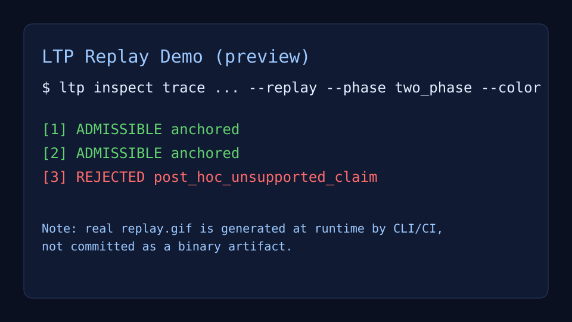

⏪
Deterministic Replay
Re-run historical traces and inspect exact decision paths before shipping agent updates.
LTP (Liminal Thread Protocol) gives your team deterministic replay, hallucination blocking, and compliance-ready evidence—without locking you into one model or framework.

Every decision is traceable, replayable, and enforceable across multi-agent workflows.
Re-run historical traces and inspect exact decision paths before shipping agent updates.
Catch unsupported claims in both pre-action and post-action phases.
Generate evidence streams designed for audits, incident reviews, and regulated workflows.
Preserve intent and context across handoffs so agents act coherently over time.
Visualize branch logic and confidence anchors to understand why each output happened.
Spot drift between expected and observed behavior before it becomes a production incident.
Pain: Risky autonomous approvals.
Solution: Policy-anchored replay trails.
Benefit: Faster audits and safer transaction flows.
Pain: Weak source attribution.
Solution: Evidence-linked reasoning traces.
Benefit: Stronger chain-of-custody for investigations.
Pain: Unsupported legal conclusions.
Solution: Citation-gated synthesis.
Benefit: Lower review risk and clearer defensibility.
Pain: Unpredictable automation during incidents.
Solution: Drift checks before critical actions.
Benefit: More reliable runbooks and postmortems.
Teams building regulated AI systems are already experimenting with LTP as their trust layer.
Run the demo, integrate adapters, or talk to us about production rollout for your AI stack.